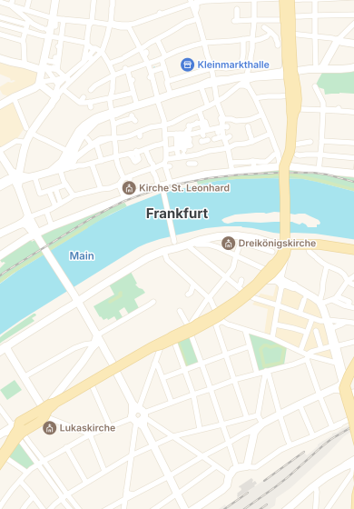

<!doctype html>
<html lang="ko"><head><meta charset="utf-8"><title>다녀간 곳 · 타일 지도 화면 시안</title>
<style>
/* 다녀간 곳에 타일 지도를 넣는 화면 시안 A~D. 지도 자리는 같은 색으로 그린 프랑크푸르트(map.svg) — 실제로는 MapLibre 타일이 들어가요 */
body { margin: 0; padding: 24px; background: #e7e9ee; font-family: -apple-system, 'SF Pro Text', 'Noto Sans KR', sans-serif; display: flex; gap: 28px; color: #1d2433; }
.col { display: flex; flex-direction: column; gap: 10px; }
.lab { font-weight: 700; font-size: 17px; line-height: 1.2; } .lab small { display: block; font-weight: 500; font-size: 12.5px; color: #6b7280; margin-top: 3px; }
.ph { position: relative; width: 390px; height: 844px; border-radius: 44px; border: 10px solid #111; overflow: hidden; background: #f4f5f7; }
.map { position: absolute; left: 0; top: 0; width: 390px; height: 560px; }
.map img { width: 390px; height: 560px; display: block; }
.bar { position: absolute; top: 0; left: 0; right: 0; height: 47px; display: flex; justify-content: space-between; align-items: center; padding: 0 30px; font-weight: 600; font-size: 15px; line-height: 1; z-index: 5; }
.btn { position: absolute; width: 42px; height: 42px; border-radius: 50%; display: grid; place-items: center; z-index: 5; box-shadow: 0 1px 2px rgba(22,27,34,.08), 0 6px 16px rgba(22,27,34,.14); }
.btn.w { background: rgba(255,255,255,.92); } .btn.b { background: #2f7cf6; box-shadow: 0 1px 2px rgba(22,27,34,.08), 0 6px 16px rgba(47,124,246,.35), inset 0 1px 0 rgba(255,255,255,.2); }
.attr { position: absolute; right: 10px; font-weight: 500; font-size: 8.5px; line-height: 1; color: #8a8f98; text-shadow: 0 0 2px #fff, 0 0 2px #fff; z-index: 4; }
.pin { position: absolute; z-index: 3; display: flex; align-items: center; gap: 2px; transform: translate(-11px, -28px); }
.pin b { font-weight: 700; font-size: 12.5px; line-height: 1; color: #1d2433; text-shadow: 0 0 3px #fff, 0 0 3px #fff, 0 0 3px #fff; white-space: nowrap; }
.num { position: absolute; z-index: 3; width: 24px; height: 24px; border-radius: 50%; background: #2f7cf6; color: #fff; font-weight: 700; font-size: 12.5px; line-height: 24px; text-align: center; transform: translate(-12px, -12px); box-shadow: 0 0 0 2.5px #fff, 0 3px 8px rgba(22,27,34,.25); }
.num.big { width: 30px; height: 30px; line-height: 30px; transform: translate(-15px, -15px); }
.sheet { position: absolute; left: 0; right: 0; bottom: 0; background: #f4f5f7; border-radius: 22px 22px 0 0; box-shadow: 0 -6px 24px rgba(22,27,34,.14); padding-top: 8px; z-index: 6; }
.grab { width: 38px; height: 5px; border-radius: 3px; background: #cfd3da; margin: 0 auto 10px; }
.card { background: #fff; border-radius: 22px; margin: 0 14px 12px; box-shadow: 0 1px 2px rgba(22,27,34,.04), 0 8px 24px rgba(22,27,34,.05); padding: 16px 18px; }
.k { font-size: 12.5px; color: #6b7280; white-space: nowrap; } .big3 { font-weight: 700; font-size: 36px; line-height: 1; font-family: 'Inter Tight', -apple-system, sans-serif; letter-spacing: -.02em; } .big3 span { font-size: 15px; font-weight: 600; margin-left: 4px; }
.chips { display: flex; gap: 8px; flex-wrap: wrap; margin-top: 12px; } .chip { background: #f1f3f6; border-radius: 999px; padding: 7px 12px; font-size: 13px; } .chip em { font-style: normal; color: #2f7cf6; font-weight: 700; margin-left: 4px; }
.city { display: flex; align-items: baseline; gap: 8px; padding: 6px 22px 10px; font-weight: 700; font-size: 22px; line-height: 1; } .city small { font-size: 12.5px; color: #6b7280; font-weight: 500; }
.row { display: flex; align-items: center; gap: 12px; padding: 12px 0; } .row + .row { border-top: 1px solid #eef0f3; }
.ic { width: 38px; height: 38px; border-radius: 12px; background: #e6eefc; display: grid; place-items: center; flex: none; }
.tx { flex: 1; min-width: 0; } .tx b { display: block; font-size: 15px; } .tx span { font-size: 12.5px; color: #6b7280; } .when { font-size: 12.5px; color: #6b7280; text-align: right; }
.hcards { position: absolute; left: 0; right: 0; bottom: 34px; display: flex; gap: 10px; padding: 0 16px; z-index: 6; }
.hc { flex: none; width: 250px; background: #fff; border-radius: 20px; padding: 14px 16px; box-shadow: 0 1px 2px rgba(22,27,34,.05), 0 10px 26px rgba(22,27,34,.14); display: flex; gap: 12px; align-items: center; }
.hc.on { box-shadow: 0 0 0 2px #2f7cf6, 0 10px 26px rgba(22,27,34,.16); }
.pill { position: absolute; left: 50%; transform: translateX(-50%); z-index: 6; background: rgba(255,255,255,.95); border-radius: 999px; padding: 9px 16px; font-weight: 600; font-size: 13px; line-height: 1; box-shadow: 0 1px 2px rgba(22,27,34,.06), 0 6px 16px rgba(22,27,34,.14); display: flex; gap: 6px; align-items: center; }
.ind { position: absolute; bottom: 8px; left: 50%; transform: translateX(-50%); width: 134px; height: 5px; border-radius: 3px; background: #111; z-index: 9; }
.day { font-size: 12.5px; color: #6b7280; font-weight: 600; padding: 10px 0 2px; }
svg.route { position: absolute; left: 0; top: 0; z-index: 2; }
</style></head><body>
<script>
const PIN = '<svg width="22" height="28" viewBox="0 0 22 28"><path d="M11 27s9-8.6 9-16A9 9 0 0 0 2 11c0 7.4 9 16 9 16z" fill="#2f7cf6" stroke="#fff" stroke-width="2"/><circle cx="11" cy="11" r="3.4" fill="#fff"/></svg>';
const PINI = '<svg width="18" height="18" viewBox="0 0 24 24" fill="none" stroke="#2f7cf6" stroke-width="2" stroke-linecap="round" stroke-linejoin="round"><path d="M12 21s7-6.5 7-12a7 7 0 0 0-14 0c0 5.5 7 12 7 12z"/><circle cx="12" cy="9" r="2.5"/></svg>';
const BACK = '<svg width="20" height="20" viewBox="0 0 24 24" fill="none" stroke="#1d2433" stroke-width="2.2" stroke-linecap="round"><path d="M15 5l-7 7 7 7"/></svg>';
const SEARCH = '<svg width="20" height="20" viewBox="0 0 24 24" fill="none" stroke="#fff" stroke-width="2.4" stroke-linecap="round"><circle cx="11" cy="11" r="6.5"/><path d="M16 16l4 4"/></svg>';
const AIM = '<svg width="20" height="20" viewBox="0 0 24 24" fill="none" stroke="#2f7cf6" stroke-width="2.2" stroke-linecap="round"><circle cx="12" cy="12" r="6"/><path d="M12 2v4M12 18v4M2 12h4M18 12h4"/></svg>';
const LIST = '<svg width="16" height="16" viewBox="0 0 24 24" fill="none" stroke="#1d2433" stroke-width="2.2" stroke-linecap="round"><path d="M8 6h12M8 12h12M8 18h12M4 6h.1M4 12h.1M4 18h.1"/></svg>';
const V = [['Städel Museum', 112, 392, '25.10.', '11:00', '처음 · Ivo와'], ['Café am Fluss', 214, 318, '24.10.', '16:10', '처음 · Ren과'], ['Hauptbahnhof', 46, 190, '23.10.', '09:00', '처음']];
const base = (k = 1) => `<div class="bar"><span>17:42</span><span>●●● ▮</span></div><div class="map" style="transform:scale(${k});transform-origin:195px 0"></div>
  <div class="btn w" style="left:16px;top:56px">${BACK}</div><div class="btn b" style="right:16px;top:56px">${SEARCH}</div>`;
const pins = (k = 1) => V.map(([n, x, y]) => `<div class="pin" style="left:${195 + (x - 195) * k}px;top:${y * k}px">${PIN}<b>${n}</b></div>`).join('');
const rows = (num) => V.map(([n, , , d, t, w], i) => `<div class="row"><div class="ic">${num ? `<b style="color:#2f7cf6">${i + 1}</b>` : PINI}</div><div class="tx"><b>${n}</b><span>${w}</span></div><div class="when">${d}<br>${t}</div></div>`).join('');
const summary = `<div class="card"><div class="k">10월에 다닌 곳</div><div class="big3">3<span>곳</span></div><div class="chips">${V.map(v => `<span class="chip">${v[0]}<em>1번</em></span>`).join('')}</div></div>`;
const FRAMES = [
  ['A', '지금 그대로', '지도만 타일로 바꿔요. 위 지도 · 아래 시트(요약 → 도시 → 목록) 그대로', `${base()}${pins()}<div class="attr" style="top:474px">© OpenMapTiles © OpenStreetMap contributors</div>
    <div class="sheet" style="top:486px"><div class="grab"></div>${summary}<div class="city">🇩🇪 Frankfurt <small>3곳 · 마지막 25.10.</small></div><div class="card" style="padding:4px 18px">${rows()}</div></div><div class="ind"></div>`],
  ['B', '지도 크게 + 접힌 시트', '지도가 화면 대부분, 시트는 한 줄만 보이고 끌어 올려요. 오른쪽에 "다시 가운데" 버튼', `${base(1.3)}${pins(1.3)}<div class="btn w" style="right:16px;top:578px">${AIM}</div><div class="attr" style="top:640px">© OpenMapTiles © OpenStreetMap contributors</div>
    <div class="sheet" style="top:652px"><div class="grab"></div><div class="card" style="display:flex;align-items:center;gap:14px"><div><div class="k">10월에 다닌 곳</div><div class="big3">3<span>곳</span></div></div><div class="chips" style="margin:0;flex-wrap:nowrap;overflow:hidden">${V.slice(0, 2).map(v => `<span class="chip">${v[0]}</span>`).join('')}</div></div></div><div class="ind"></div>`],
  ['C', '장소 카드 줄', '시트 대신 아래에 장소 카드를 옆으로 넘겨요. 카드를 고르면 그 핀으로 가요. "목록"을 누르면 지금 시트가 올라와요', `${base(1.3)}${pins(1.3)}<div class="pill" style="top:600px">${LIST}목록 · 3곳</div><div class="attr" style="top:640px">© OpenMapTiles © OpenStreetMap contributors</div>
    <div class="hcards">${V.map(([n, , , d, t, w], i) => `<div class="hc${i === 0 ? ' on' : ''}"><div class="ic">${PINI}</div><div class="tx"><b>${n}</b><span>${d} ${t} · ${w}</span></div></div>`).join('')}</div><div class="ind"></div>`],
  ['D', '번호 핀 + 동선', '간 순서대로 번호를 달고 점선으로 이어요. 아래 목록도 날짜순 번호', `${base()}<svg class="route" width="390" height="560"><path d="M46 190 C 120 240, 180 280, 214 318 S 140 370, 112 392" fill="none" stroke="#2f7cf6" stroke-width="3" stroke-dasharray="2 7" stroke-linecap="round" opacity=".9"/></svg>
    ${V.map(([n, x, y], i) => `<div class="num${i === 0 ? ' big' : ''}" style="left:${x}px;top:${y}px">${3 - i}</div><div class="pin" style="left:${x + 26}px;top:${y + 18}px"><b>${n}</b></div>`).join('')}<div class="attr" style="top:474px">© OpenMapTiles © OpenStreetMap contributors</div>
    <div class="sheet" style="top:486px"><div class="grab"></div><div class="city">🇩🇪 Frankfurt <small>3곳 · 23.10. – 25.10.</small></div><div class="card" style="padding:4px 18px">${[...V].reverse().map(([n, , , d, t, w], i) => `<div class="row"><div class="ic"><b style="color:#2f7cf6">${i + 1}</b></div><div class="tx"><b>${n}</b><span>${w}</span></div><div class="when">${d}<br>${t}</div></div>`).join('')}</div></div><div class="ind"></div>`],
];
document.body.innerHTML = FRAMES.map(([k, t, d, h]) => `<div class="col"><div class="lab">${k}. ${t}<small>${d}</small></div><div class="ph">${h}</div></div>`).join('');
</script>
</body></html>
